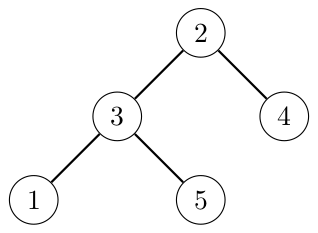

Tree Quiz
Your friend wants to quiz you. You are given a rooted tree with \(n\) nodes, numbered from \(1\) to \(n\). For every node \(i\), its parent is node \(p_i\), except for the root (the node without a parent) which has \(p_i = 0\). Node \(u\) is an ancestor of node \(v\) if either \(u = v\), or node \(u\) is an ancestor of the parent of node \(v\) (if it exists).
We say that node \(z\) is a common ancestor of nodes \(x\) and \(y\) if node \(z\) is an ancestor of both nodes \(x\) and \(y\). We say that node \(z\) is the lowest common ancestor of nodes \(x\) and \(y\) if it is a common ancestor of nodes \(x\) and \(y\), and every common ancestor of nodes \(x\) and \(y\) is also an ancestor of node \(z\). We denote the lowest common ancestor of nodes \(x\) and \(y\) by \(\mathrm{LCA}(x, y)\). In particular, \(\mathrm{LCA}(x, x) = x\).
Your friend would like to run the following pseudocode:
let L be an empty array
for x = 1 to n
for y = 1 to n
append ((x - 1) * n * n + (LCA(x, y) - 1) * n + (y - 1)) to L
sort L in non-decreasing order
Your friend has \(q\) questions, numbered from \(1\) to \(q\). In question \(j\), you are given an integer \(k_j\) and asked to find the \(k_j\)-th element of the array \(L\). Note that \(L\) is 1-indexed, so the indices range from \(1\) to \(n^2\), inclusive. To pass the quiz, you have to answer all of the questions.
Input
The first line of input contains two integers \(n\) and \(q\) (\(1 \le n \le 100\,000\); \(1 \le q \le 100\,000\)). The second line contains \(n\) integers \(p_1, p_2, \ldots, p_n\) (\(0 \le p_i \le n\) for all \(i\)). It is guaranteed that the given values represent a rooted tree. Each of the next \(q\) lines contains an integer. The \(j\)-th line contains \(k_j\) (\(1 \le k_j \le n^2\)).
Output
For each question in order, output an integer representing the answer to the question.
5 3 3 0 2 2 3 1 18 25
0 82 124
Explanation for the sample input/output #1
The tree in the input is illustrated by Figure K.1.

The elements of \(L\) are
\((0, 6, 8, 12, 14, 30, 31, 32, 33, 34, 56, 58, 60, 62, 64, 80, 81, 82, 84, 93, 106, 108, 110, 112, 124)\).